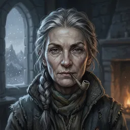
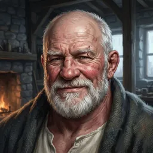
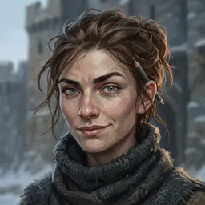
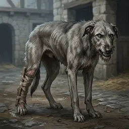

Book I — The House of Menders
Chapter 4 — Old Mercy
- Where
- Saint Ysolde's, the cloister, in a plain chair facing Hollis's across a sword's length of wet flags, the kitchen in its door, Wren on the fountain's rim, Ash in the arcade
- Season
- first snow of the year on the Steps
"Hit me properly. Once. So I know what you've got." The kitchen went quiet. Wren's pencil stopped.
The quest
The ListThe Confessors have come for the Faithless at Saint Ysolde's with a list: Darrow first, Hollis second. What stands between them and the hall is Old Mercy, the sanctuary bell: while it rings at dawn and dusk, no blade passes the gate and no name under it is taken down against its will. Marrant has not drawn a blade in a month. He has camped on the lower terrace, kept the cage, and reached into the House by the lever: a clerk in grey who never kneels sent two black slivers up in the House's own letter-satchel, one of them now set in the rock under the row and making the stone grow frost, and holds the almoner's sister at Calden for the second. Banners that are not grey are on the Holloway, a day off.
What he is fighting
The false letter is written and held: the second set, the hall quiet, in the almoner's own hand with every word's purpose told, and in it a brother's questions for his sister, where she is kept and a line in her hand, and one true line. It goes down with the carter and is read at the winch-house. If it is believed, the Confessor waits and the clerk may name the place; if it is caught, the next letter up comes without her mark. The answer at the dawn bell is owed under the Prior's roof.
With him




The Reckoning
Ser Darrow of Edgemoor
Level 7 · Kindled · HP 50
The faint numbers are the ones he read behind his own.
Knots tied III of VII · next, The Knot of the Road: it can run.
The soft season: do not trust the quiet.
The tales
2- Tale 1 — Quickstep1 of 3 told · latest: Piece 1 — The Breeder's Son
- Tale 2 — Road's the Roadtold in full · latest: Piece 3 — A Carter Without a Bell
The past, a piece at a time. All the tales.
The map
● Darrow ● visited ● not yet — the road so far
A small choice
answered- "No."
- Hit him properly. chosen
- Let Wren call it.
From Chapter 4 — Sitting Down.
The dice
- RESOLVE · DC 10Success
- d20 16 +0 resolve = 16Success
- FINESSE · DC 11Failure
- d20 5 +0 finesse = 5Failure
- RESOLVE · DC 13cast ×2Success
- d20 2 +0 resolve +3 proficiency +3 Warden's Eye III = 8Failure
- Inspiration spent · cast again
- d20 12 +0 resolve +3 proficiency +3 Warden's Eye III = 18Success
- RESOLVE · DC 12Partial (Success At A Cost)
- d20 4 +0 resolve +3 proficiency +3 The Mender's Patience III = 10Partial (Success At A Cost)
- VIGOR · DC 8cast ×3Success
- d20 2 +0 vigor +1 chapter 3 Hard-won = 3Failure
- Inspiration spent · cast again
- d20 2 +0 vigor +1 chapter 3 Hard-won = 3Failure
- Inspiration spent · cast again
- d20 19 +0 vigor +1 chapter 3 Hard-won = 20Success